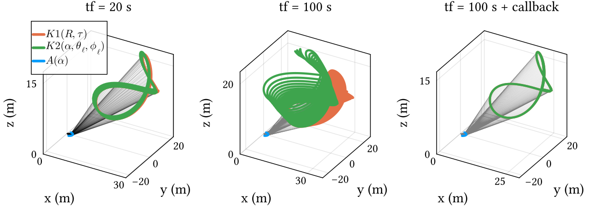
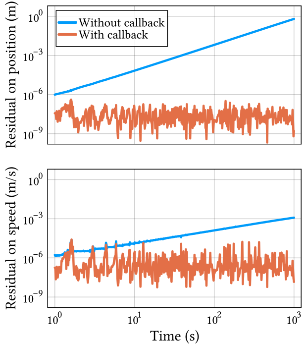

A 10D model
Model description
In this appendix, we describe the model designed by Alain Nême inspired by Fagiano PhD thesis and Diehl PhD thesis. The objective is to have an ODE that does not involve a control to simulate a kite flying horizontal eights, or lemniscates, while the arm extracts energy from the system. The kite \(K\) is attached to the tip of a rotating arm \(A\) of length \(a\) with four lines of length \(\ell\) (assumed constant), the arm rotates around \(\vu z\) at the origin \(O\).
Static and kinematics
Let us define three unit vectors: \(\vu a\) follows the arm, \(\hat{\boldsymbol{\ell}}\) follows the lines and \(\vu r\) points to the kite: \begin{align} \vu a &= \frac{\vb a}{\norm{\vb a}} = \begin{pmatrix} \cos(\alpha) \\ \sin(\alpha) \\ 0 \end{pmatrix} \tag{72}\\ \hat{\boldsymbol{\ell}} &= \frac{\boldsymbol{\ell}}{\norm{\boldsymbol{\ell}}} = \begin{pmatrix} \sin(\theta_\ell) \cos(\alpha + \phi_\ell) \\ \sin(\theta_\ell) \sin(\alpha + \phi_\ell) \\ \cos(\theta_\ell) \end{pmatrix} \tag{73}\\ \tag{74} \vu r &= \frac{\vb r}{\norm{\vb r}} = \begin{pmatrix} \sin(\theta(\tau)) \cos(\phi(\tau)) \\ \sin(\theta(\tau)) \sin(\phi(\tau)) \\ \cos(\theta(\tau)) \end{pmatrix} \text{ with} \begin{cases} \theta : \tau \mapsto \theta_0 + \Delta \theta \sin(2\tau) \\ \phi : \tau \mapsto \Delta \phi \sin(\tau) \end{cases}. \end{align} Here, \(\alpha\) is the angle between the arm and the \(x\)-axis (aligned with the wind), \(\theta_\ell\), \(\phi_\ell\) are the spherical coordinates of \(K\) in \((A, \vu a, \vu z \times \vu a, \vu z)\), and \(R\), \(\theta\) and \(\phi\) are the spherical coordinates of \(K\) in \((O, \vu x, \vu y, \vu z)\). Spherical coordinates use the physics convention also found in ISO 80000-2:2019:
\(R\) is the radius,
\(\theta\) is the polar angle from the \(z\)-axis,
\(\phi\) is the azimuthal angle from the \(x\)-axis.
The state of the system at time \(t\) is given by the configuration vector \begin{equation} \tag{75} \vb q(t) = (\alpha(t), \theta_\ell(t), \phi_\ell(t), R(t), \tau(t)) \end{equation} and its corresponding velocities \(\dot{\vb q}(t)\), while \(\theta_0\), \(\Delta \theta\) and \(\Delta \phi\) are the parameters that control the shape of the lemniscate. Note that:
\(\vb a\) depends only on state \(\alpha\),
\(\boldsymbol{\ell}\) depends only on state \(\theta_\ell\) and \(\phi_\ell\),
\(\vb r\) depends only on state \(R\) and \(\tau\).
Using Chasles’ relation, we get the following loop closure condition: \begin{equation} \tag{76} \vb r = \vb a + \boldsymbol{\ell}. \end{equation} We define \begin{equation} \tag{77} \begin{split} \vb g : \vb q\in \mathbf{R}^5 \mapsto \vb g(\vb q) &= \vb r(\vb q) - \vb a(\vb q) - \boldsymbol{\ell}(\vb q) \\ &= \begin{pmatrix} R \sin(\theta(\tau)) \cos(\phi(\tau)) - a \cos(\alpha) - \ell \sin(\theta_\ell) \cos(\alpha + \phi_\ell) \\ R \sin(\theta(\tau)) \sin(\phi(\tau)) - a \sin(\alpha) - \ell \sin(\theta_\ell) \sin(\alpha + \phi_\ell) \\ R \cos(\theta(\tau)) - \ell \cos(\theta_\ell) \end{pmatrix} \in \mathbf{R}^3 \end{split} \end{equation} such that (76) rewrites to \begin{equation} \tag{78} \vb g(\vb q) = 0_{\mathbf{R}^3} \end{equation} We have a five dimensional state (cf. (75)) subject to three algebraic constraints (cf. (78)), thus the system has two dof.
The set of acceptable positions for \(K\) is the intersection between a filled torus (filled spindle torus if the lines are longer than the arm, i.e. \(\ell > a\)) and an eight-shaped cone. See Fig. 4 and Section 1.1.
A.3 Dynamics
We assume that all forces apply to the kite at point \(K\) of mass \(m\) and all moments apply to the arm which rotates around \(\vu z\) at point \(O\). We want to determine \(\ddot{\vb q}\) in terms of \(\vb q\) and \(\dot{\vb q}\).
We choose the 1/7-power-law profile to model the wind, such that the wind speed \(\vb w\) at altitude \(z\) is given by \(\vb w(z) = w_r \qty( z / z_r )^{1/7} \vu x\). The apparent wind, the wind which is felt by the kite, is then \(\vb w_a = \vb w - \dot{\vb r}\). The lift \(L\) and drag \(D\) of the kite are respectively \begin{align} L &= \frac{1}{2} S \rho_a C_L \norm{\vb w_a}^2 \tag{79}\\ D &= \frac{1}{2} S \rho_a C_D \norm{\vb w_a}^2 \tag{80}\end{align} where \(S\) is the surface of the kite, \(\rho_a\) is the density of the air and \(C_L\) and \(C_D\) the lift and drag coefficients. Using the lift-to-drag ratio \(f = L / D\), we get the simpler \(D = L/f\). realistically, \(C_L\) and \(C_D\) should depend on the angle of incidence, but we don’t model this angle and assume of value of \(0\). To determine the direction of the lift and drag forces, we assume that the chord of the kite is aligned with the apparent wind, and that its leading edge is perpendicular to the lines, which completely determines the orientation of the kite. Let us define \(\vu k_b\) the unit vector aligned with the chord pointing to the back of the kite, \(\vu k_r\) the unit vector aligned with the leading edge pointing to the right of the kite, and \(\vu k_t\) the unit vector normal to the surface of the kite pointing to its top. We have : \begin{align} \vu k_b &= \frac{\vb w_a }{\norm{\vb w_a}} \tag{81}\\ \vu k_r &= \frac{\hat{\boldsymbol{\ell}} \times \vu k_b}{\norm{\hat{\boldsymbol{\ell}} \times \vu k_b}} \tag{82}\\ \vu k_t &= \vu k_b \times \vu k_r. \tag{83}\end{align} We then obtain the aerodynamic forces of the kite \begin{align} \vb L &= L \vu k_t \tag{84}\\ \vb D &= D \vu k_b. \tag{85}\end{align}
To assess the impact of line length on the performance of the device, we also need to model the drag of the lines. Let us first define the apparent wind of the lines at distance \(\lambda\) from the attachment point \(A\): \begin{equation} \vb w_{a,\ell}(\lambda) = \vb w\qty(\frac{\lambda}{\ell} K_z) - \frac{\lambda}{\ell} \dot{\vb r} - \qty(1 - \frac{\lambda}{\ell}) \dot{\vb a}, \tag{86}\end{equation} and \(\vu w_a = \frac{\vb w_a}{\norm{\vb w_a}}\) is its unit vector. Let \(\theta_a\) be the angle between the lines and the apparent wind: \(\hat{\boldsymbol{\ell}} \cdot \vu w_{a,\ell} = \cos(\theta_a)\), so that \(\sin(\theta_a) = \sqrt{1 - (\hat{\boldsymbol{\ell}} \cdot \vu w_{a,\ell})^2}\). Following the cross-flow principle, the drag of an element of line of length \(\dd{\lambda}\) and diameter \(d_\ell\) depends only on the component of the apparent wind orthogonal to the lines, \(\vb w_{a,\ell}^\perp = \vb w_{a,\ell} - (\hat{\boldsymbol{\ell}} \cdot \vb w_{a,\ell})\,\hat{\boldsymbol{\ell}}\), of norm \(\norm{\vb w_{a,\ell}}\sin(\theta_a)\), and is directed along it. The drag of the \(n = 4\) lines with drag coefficient \(C_{D,\ell}\) is \begin{equation} \vb D_\ell = \int\limits_{\lambda = 0}^{\lambda = \ell} \frac{1}{2} n d_\ell \rho_a C_{D,\ell} \norm{\vb w_{a,\ell}^\perp(\lambda)}\, \vb w_{a,\ell}^\perp(\lambda) \dd{\lambda} = \frac{1}{2} n \ell d_\ell \rho_a C_{D,\ell} \int \limits_{\xi=0}^{\xi=1} \norm{\vb w_{a,\ell}^\perp(\ell \xi)}\, \vb w_{a,\ell}^\perp(\ell \xi) \dd{\xi}. \tag{87}\end{equation} We approximate this integral by assuming that the speed of \(A\) is negligible, \(\dot{\vb a} \approx 0\), and that the apparent wind varies linearly along the lines, \(\vb w_{a,\ell}(\ell\xi) \approx \xi\, \vb w_a\). Then \(\vb w_{a,\ell}^\perp(\ell\xi) \approx \xi\, \vb w_a^\perp\), and the integral of \(\xi^2\) over \([0,1]\) gives the approximated drag of the lines \begin{equation} \tag{88} \tilde{\vb D}_\ell = \tilde D_\ell\, \vu w_a^\perp, \qquad \tilde D_\ell = \frac{1}{6} n \ell d_\ell \rho_a C_{D,\ell} \norm{\vb w_a^\perp}^2, \qquad \vu w_a^\perp = \frac{\vb w_a^\perp}{\norm{\vb w_a^\perp}}, \end{equation} and the total aerodynamic force of the system is \begin{equation} \tag{89} \vb F_a = L \vu k_t + D \vu k_b + \tilde D_\ell \vu w_a^\perp. \end{equation} In all the computations of this paper, \(C_{D,\ell} = 0\): the drag of the lines is lumped into the drag coefficient \(C_D\) of the kite.
The kite has mass \(m\) and the lines have density \(\rho_\ell\), therefore their mass is \(m_\ell = n \pi \ell \rho_\ell d_\ell^2 / 4\). We assume that the kite lifts half of the lines, while the rest is supported by the arm. The total flying mass is then \(m + m_\ell/2\) and the total weight is \begin{equation} \tag{90} \vb F_g = -\qty(m + \frac{m_\ell}{2}) g \vu z. \end{equation}
We denote \(\vb F_\ell = -F_\ell \hat{\boldsymbol{\ell}}\) the tension of the lines on the kite, then, the torque applied by the lines on the arm is \begin{equation} \vb T_\ell = \vb a \times (- \vb F_\ell) = a F_\ell \vu a \times \hat{\boldsymbol{\ell}}. \tag{91}\end{equation} Since the arm rotates around the \(z\) axis, only the torque in the \(z\) direction has an effect, therefore we only need the \(z\) component of \(\vb T_\ell\). Also, for computing the cross-product, let us rewrite the vectors \(\vu a\) and \(\hat{\boldsymbol{\ell}}\) in the base attached to the arm \(\mathscr B_a = (\vu a, \vu z \times \vu a, \vu z)\); trivially, \(\vu a = 1 \vu a\) and \begin{equation} \tag{92} \hat{\boldsymbol{\ell}} = \sin(\theta_\ell) \cos(\phi_\ell) \vu a + \sin(\theta_\ell) \sin(\phi_\ell) (\vu z \times \vu a) + \cos(\theta_\ell) \vu z. \end{equation} Let us now compute the cross-product: \begin{equation} \vu z \cdot (F_\ell \vu a \times \hat{\boldsymbol{\ell}}) = 1 \cdot \sin(\theta_\ell) \sin(\phi_\ell) - 0 \cdot \sin(\theta_\ell) \cos(\phi_\ell) = \sin(\theta_\ell) \sin(\phi_\ell), \tag{93}\end{equation} from which we finally get the expression for the effective torque of the lines: \begin{equation} \vb T_\ell \cdot \vu z = a F_\ell \sin(\theta_\ell) \sin(\phi_\ell). \tag{94}\end{equation} The torque of the generator on the arm is \(T : \omega \mapsto -b \omega\) where \(b\) is a rotational viscous damping coefficient with dimension of torque per angular velocity, and the arm has inertia \(I\), such that using Newton’s second law, we get \begin{equation} \tag{95} I \ddot \alpha = \vb T_\ell \cdot \vu z + T(\dot \alpha) = a F_\ell \sin(\theta_\ell) \sin(\phi_\ell) - b \dot \alpha, \end{equation} from which we compute \(\vb F_\ell\), directed by \(-\hat{\boldsymbol{\ell}}\): \begin{equation} \tag{96} \vb F_\ell = \frac{-I \ddot \alpha - b \dot \alpha}{a \sin(\theta_\ell) \sin(\phi_\ell)} \hat{\boldsymbol{\ell}}. \end{equation} In the above, the lever arm of the tension is \(a \sin(\theta_\ell) \sin(\phi_\ell)\). For \(\sin(\theta_\ell)\) to be zero, the kite would have to fly underground directly below the tip of the arm, which won’t happen, or directly above it, which also won’t happen if \(\theta_0 - \Delta \theta > 0\), cf. (92), which is verified for realistic values of \(\theta_0\) and \(\Delta \theta\). With a typical choice of parameters the kite will never fly directly above the tip of the arm, thus \(\sin(\theta_\ell) > 0\) at all times. However, \(\sin(\phi_\ell)\) could very well be null, but the singularity is only in the equations, as we observe no exceptional behavior when the lines and the arm are aligned (\(xy\)-plane); for the reduced model, it is removed by solving the equation of the arm for \(\ddot\alpha\) instead of the tension (Section 1.4 and Appendix B).
To understand this section better, let’s picture a train on a railway. The train doesn’t control where by steering (a control in the mathematical sense), instead, the railway exerts a force on the train, always perpendicular to railway/the direction of the train, that keeps the train on the track passively. We want the eight-shaped cone to play the role of the railway to passively steer the kite into eight-shaped trajectories. One way to physically describe this interaction is that the kite glides without friction on the manifold, therefore it feels a fictitious force \(\vb F_c\) always perpendicular to the manifold. The cone has two tangent vectors \(\pdv{\vb r}{R}\) and \(\pdv{\vb r}{\tau}\), therefore it is normal to both: \begin{equation} \begin{cases} \tag{97} \vb F_c \cdot \pdv{\vb r}{R} = 0 \\ \vb F_c \cdot \pdv{\vb r}{\tau} = 0. \end{cases} \end{equation}
applying Newton’s second law to the kite
Newton’s second law applied to the kite’s center of mass gives \begin{equation} \tag{98} m \ddot{\vb r} = \vb F_a + \vb F_g + \vb F_\ell + \vb F_c. \end{equation} At this point, we need to choose two equations to keep, while the others will be used at substitutions. For their nice symmetry, we keep (97) and use the others to express \(\vb F_c\) in terms of \(\vb q, \dot{\vb q}\), and \(\ddot{\vb q}\). From (98), we have that \begin{equation} \tag{99} \vb F_c = m \ddot{\vb r} - \vb F_a - \vb F_g - \vb F_\ell. \end{equation} The acceleration of the kite \(\ddot{\vb r}\) obtained by differentiating twice its position \(\vb r\): \begin{equation} \vb r = R \vu r = R \begin{pmatrix} \sin(\theta) \cos(\phi) \\ \sin(\theta) \sin(\phi) \\ \cos(\theta) \end{pmatrix}, \tag{100}\end{equation} \begin{equation} \begin{split} \dot{\vb r} &= \dot R \vu r + R \dot{\vu r} = \dot R \begin{pmatrix} \sin(\theta) \cos(\phi) \\ \sin(\theta) \sin(\phi) \\ \cos(\theta) \end{pmatrix} + R \begin{pmatrix} \cos(\theta) \cos(\phi) \dot \theta - \sin(\theta) \sin(\phi) \dot \phi \\ \cos(\theta) \sin(\phi) \dot \theta + \sin(\theta) \cos(\phi) \dot \phi \\ -\sin(\theta) \dot \theta \end{pmatrix} \\ &= \begin{pmatrix} \sin(\theta) \cos(\phi) \dot R + \cos(\theta) \cos(\phi) \dot \theta - \sin(\theta) \sin(\phi) \dot \phi \\ \sin(\theta) \sin(\phi) \dot R + \cos(\theta) \sin(\phi) \dot \theta + \sin(\theta) \cos(\phi) \dot \phi \\ \cos(\theta) \dot R - \sin(\theta) \dot \theta \end{pmatrix}, \end{split} \tag{101}\end{equation} \begin{equation} \begin{split} \ddot{\vb r} &= \ddot R \vu r + \dot R \dot{\vu r} + \dot R \dot{\vu r} + R \ddot{\vu r} = \ddot R \vu r + 2 \dot R \dot{\vu r} + R \ddot{\vu r}. \end{split} \tag{102}\end{equation} The three forces \(\vb F_g\), \(\vb F_a(\vb q, \dot{\vb q})\), and a\(\vb F_\ell(\vb q, \dot{\vb q}, \ddot{\vb q})\) are developed in (90), (89), and (96) respectively.
We have written every quantity in (99) explicitly in terms of \(\vb q\), \(\dot{\vb q}\), and \(\ddot{\vb q}\), thus (97) is a system of two second order odes in \(\vb q\in \mathbf{R}^5\). By combining (97) and (78), we obtain the following system of two implicit second order odes and three algebraic equations (or constraints): \begin{equation} \begin{cases} \vb F_c(\vb q, \dot{\vb q}, \ddot{\vb q}) \cdot {\pdv{\vb r}{R}}(\vb q) = 0 \\ \vb F_c(\vb q, \dot{\vb q}, \ddot{\vb q}) \cdot {\pdv{\vb r}{\tau}}(\vb q) = 0 \\ R \sin(\theta(\tau)) \cos(\phi(\tau)) - a \cos(\alpha) - \ell \sin(\theta_\ell) \cos(\alpha + \phi_\ell) = 0 \\ R \sin(\theta(\tau)) \sin(\phi(\tau)) - a \sin(\alpha) - \ell \sin(\theta_\ell) \sin(\alpha + \phi_\ell) = 0 \\ R \cos(\theta(\tau)) - \ell \cos(\theta_\ell) = 0, \end{cases} \tag{103}\end{equation} which can be rewritten as \begin{equation} \begin{cases} \tag{104} \vb f(\vb q, \dot{\vb q}, \ddot{\vb q}) &= 0_{\mathbf{R}^2} \\ \vb g(\vb q) &= 0_{\mathbf{R}^3}, \end{cases} \end{equation} with \begin{equation} \vb f(\vb q, \dot{\vb q}, \ddot{\vb q}) = \begin{pmatrix} \vb F_c(\vb q, \dot{\vb q}, \ddot{\vb q}) \cdot {\pdv{\vb r}{R}}(\vb q) \\ \vb F_c(\vb q, \dot{\vb q}, \ddot{\vb q}) \cdot {\pdv{\vb r}{\tau}}(\vb q) \end{pmatrix} \tag{105}\end{equation}
Numerical solving
The system found in (104) consists of two odes and three algebraic equations of \(\vb q: t \mapsto \vb q(t) \in \mathbf{R}^5\), therefore it is a dae. The first step toward a solution is to reduce it to a system of odes, which is called index reduction. It consists in differentiating the algebraic equations with respect to time until we have a system of odes, while adding initial conditions to keep the original algebraic equations valid at all times. The algebraic equation \(\vb g(\vb q) = 0\) is reduced to \begin{equation} \begin{cases} \dot{\vb g}(\vb q, \dot{\vb q}) = 0 \\ \vb g(\vb q(t_0)) = 0,\end{cases} \tag{106}\end{equation} and differentiating a second time yields \begin{equation} \begin{cases} \ddot{\vb g}(\vb q, \dot{\vb q}, \ddot{\vb q}) = 0 \\ \dot{\vb g}(\vb q(t_0), \dot{\vb q}(t_0)) = 0 \\ \vb g(\vb q(t_0)) = 0,\end{cases} \tag{107}\end{equation} which also exhibits three new algebraic equations that were previously hidden: \(\dot{\vb g}(\vb q, \dot{\vb q}) = 0\), i.e. not only must the configuration be consistent, but the velocities as well. In our particular case, two differentiation steps are required, thus we are working with an index \(2\) dae. By doing so, our system is reduced to \(5\) second order odes and \(6\) initial conditions: \begin{equation} \begin{cases} \vb f(\vb q, \dot{\vb q}, \ddot{\vb q}) = 0_{\mathbf{R}^2} \\ \ddot{\vb g}(\vb q, \dot{\vb q}, \ddot{\vb q}) = 0_{\mathbf{R}^3} \\ \dot{\vb g}(\vb q(t_0), \dot{\vb q}(t_0)) = 0_{\mathbf{R}^3} \\ \vb g(\vb q(t_0)) = 0_{\mathbf{R}^3}, \end{cases} \tag{108}\end{equation} We introduce \(v = \dot{\vb q}\) and rewrite this previous system with only first order odes and initial conditions: \begin{equation} \begin{cases} \vb f(\vb q, \vb v, \dot{\vb v}) = 0_{\mathbf{R}^2} \\ \ddot{\vb g}(\vb q, \vb v, \dot{\vb v}) = 0_{\mathbf{R}^3} \\ \dot{\vb q}- \vb v = 0_{\mathbf{R}^5} \\ \dot{\vb g}(\vb q(t_0), \vb v(t_0)) = 0_{\mathbf{R}^3} \\ \vb g(\vb q(t_0)) = 0_{\mathbf{R}^3}. \end{cases} \tag{109}\end{equation} The first two vector equations are implicit and affine in \(\dot{\vb v}\): we use a symbolic solver to solve them and have the explicit expression of \(\dot{\vb v}\) directly written into our code. As for the initialization, we have to choose \((\vb q, \vb v) \in \mathbf{R}^{5+5}\) verifying the six implicit nonlinear constraints. To make the solving easier, we set \begin{equation} \begin{cases} \alpha(t_0) = 0 \\ \dot \alpha(t_0) = 0, \end{cases} \tag{110}\end{equation} and let the user choose \((\tau(t_0), \dot \tau) \in \mathbf{R}^2\). We again use a symbolic solver to determine the rest of the initial conditions as a function of \((\tau(t_0), \dot \tau(t_0))\).
We can finally solve the system numerically using an ode solver like Runge-Kutta 5(4) to get the trajectory shown on the left pane of Fig. 16.
On the left pane, over a short horizon, \(\vb a + \boldsymbol{\ell}\) seems to coincide with \(\vb r\); yet on the middle pane, by integrating for longer, the two trajectories diverge. Even though we initialize such that \(\dot{\vb g}(\vb q(t_0)) = 0\) and the ode part enforces \(\ddot{\vb g}(\vb q, \vb v, \dot{\vb v}) = 0\), the slight integration error made at each time step accumulate and make \(\dot{\vb g}\), and eventually \(\vb g\), drift away from zero (Fig. 17).
Limitations of this approach
We just saw that the method in not stable for longer integration periods.
This can be avoided by using a callback to project \((\vb q, \vb v)\) on the acceptable manifold \begin{equation} \left\{ (\vb q, \vb v) \in \mathbf{R}^{5+5} \mid \vb g(\vb q) = 0 \land \dot{\vb g}(\vb q, \vb v) = 0 \right\} \tag{111}\end{equation} using one or multiple steps of Newton’s method. The state then stays coherent at all times (right pane of Fig. 16, and Fig. 17) but the running time is multiplied by two. Another limitation of this approach include the reliance on an external symbolic solver, whose output is copy pasted into the code, therefore the code is unreadable and hard to maintain, and a small change in the model requires re-running the symbolic solver.

Code that produced this figure
src/numerics10d.jl (region setup10d), see also the full file.
## Setup
p = PMP.build_para()
τ0, dτ0 = 1e-10, 10
u0_10 = PM10.init_u(τ0, dτ0, p)
# Projection callback: its tolerance is independent of the integrator tolerance.
cb_tol = 1e-10
callback = PM10.build_manifold_projection(u0_10; save=true, tol=cb_tol)
callback_no_save = PM10.build_manifold_projection(u0_10; save=false, tol=cb_tol)src/numerics10d.jl (region traj10d), see also the full file.
# Physical plots at loose tolerance, to exaggerate the drift of the raw 10D model.
tf_short, tf, tol = 20, 100, 1e-3
sol10 = PM10.integrate(u0_10, tf, p, Tsit5(); save_everystep=true, tol)
sol10_cb = PM10.integrate(u0_10, tf, p, Tsit5(); save_everystep=true, tol, callback=callback_no_save)
## 10D, Tsit5, tol=1e-3, tf = 20 vs 100 s vs callback
points_per_second = 30
fig_traj_short = VIZ.plot_trajectory_10D(sol10; tspan=(0, tf_short), points_per_second)
fig_traj = VIZ.plot_trajectory_10D(sol10; points_per_second)
fig_traj_cb = VIZ.plot_trajectory_10D(sol10_cb; points_per_second)
params = (; xlabel="x (m)", ylabel="y (m)", zlabel="z (m)", legend=false, widen=false)
plot!(fig_traj_short; title="tf = 20 s", params..., legend=:topleft)
plot!(fig_traj; title="tf = 100 s", params...)
plot!(fig_traj_cb; title="tf = 100 s + callback", params...)
tf_fig = plot(fig_traj_short, fig_traj, fig_traj_cb, layout=(1, 3), size=SIZE_FULL)
# one tick at each end of each axis, plus 0 when it is interior
for i in 1:3
plot!(tf_fig, subplot=i,
xticks=edge_ticks(tf_fig[i], :x; include_zero=true),
yticks=edge_ticks(tf_fig[i], :y; include_zero=true),
zticks=edge_ticks(tf_fig[i], :z; include_zero=true))
end
files = save_figure(tf_fig, "trajectory_10D_short_long_cb")
Code that produced this figure
src/numerics10d.jl (region setup10d), see also the full file.
## Setup
p = PMP.build_para()
τ0, dτ0 = 1e-10, 10
u0_10 = PM10.init_u(τ0, dτ0, p)
# Projection callback: its tolerance is independent of the integrator tolerance.
cb_tol = 1e-10
callback = PM10.build_manifold_projection(u0_10; save=true, tol=cb_tol)
callback_no_save = PM10.build_manifold_projection(u0_10; save=false, tol=cb_tol)src/numerics10d.jl (region residuals10d), see also the full file.
## Interpolated residuals
tf_long = fast ? 100 : 1000
sol10 = PM10.integrate(u0_10, tf_long, p, Tsit5(); save_everystep=true, tol=1e-6)
sol10_cb_t = PM10.integrate(u0_10, tf_long, p, Tsit5(); save_everystep=true, tol=1e-6, callback=callback_no_save)
ts = logrange(1, sol10.prob.tspan[2], 501)
res = [PM10.manifold_residuals!(similar(u0_10, 6), sol10(t), p) for t in ts]
res_cb = [PM10.manifold_residuals!(similar(u0_10, 6), sol10_cb_t(t), p) for t in ts]
ylim = exp10.((-9.5, 0.5))
xticks_ = exp10.(-18:1:10)
yticks_ = exp10.(-18:3:10)
plot(; xscale=:log10, xticks=xticks_, xformatter=x -> "", ylim, yscale=:log10, yticks=yticks_, ylabel="Residual on position (m)", legend=:topleft)
plot!(ts, norm.(getindex.(res, Ref(1:3))), label="Without callback")
fig_pos = plot!(ts, norm.(getindex.(res_cb, Ref(1:3))), label="With callback")
plot(; xscale=:log10, xticks=xticks_, xlabel="Time (s)", ylim, yscale=:log10, yticks=yticks_, ylabel="Residual on speed (m/s)")
plot!(ts, norm.(getindex.(res, Ref(4:6))))
fig_speed = plot!(ts, norm.(getindex.(res_cb, Ref(4:6))))
plot(fig_pos, fig_speed, layout=(2, 1), size=SIZE_HALF .* (1, 1.5))
plot!(bottommargin=3Plots.mm, leftmargin=6Plots.mm)
append!(files, save_figure(current(), "residuals_10D_interp"))As previously mentioned, this model has five states but only two degrees of freedom; this observation motivates the main result of the paper, which is a whole rewrite of the model by having only two states and no configuration constraint. The pure ode form makes the analytical work much easier, the numerical solution has no drift and is computed much faster because of the reduced number of dimensions, no symbolic solver is required, nor is a callback.